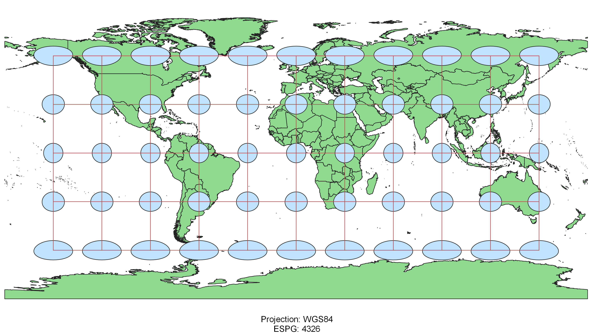
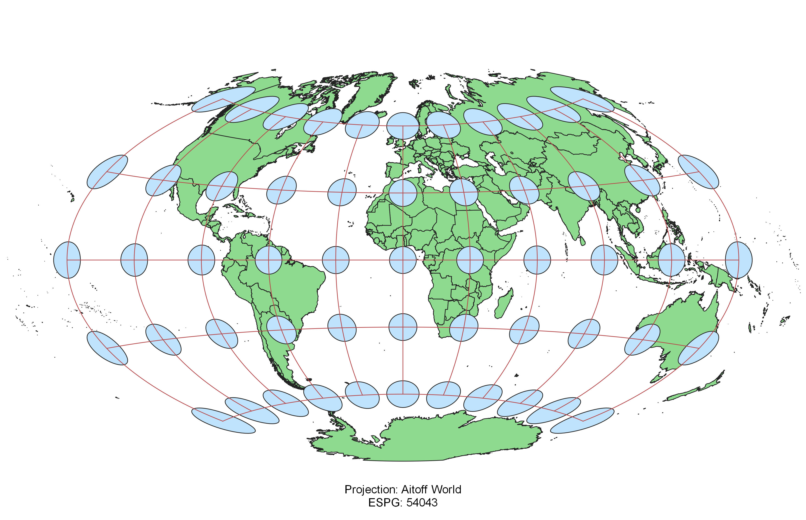
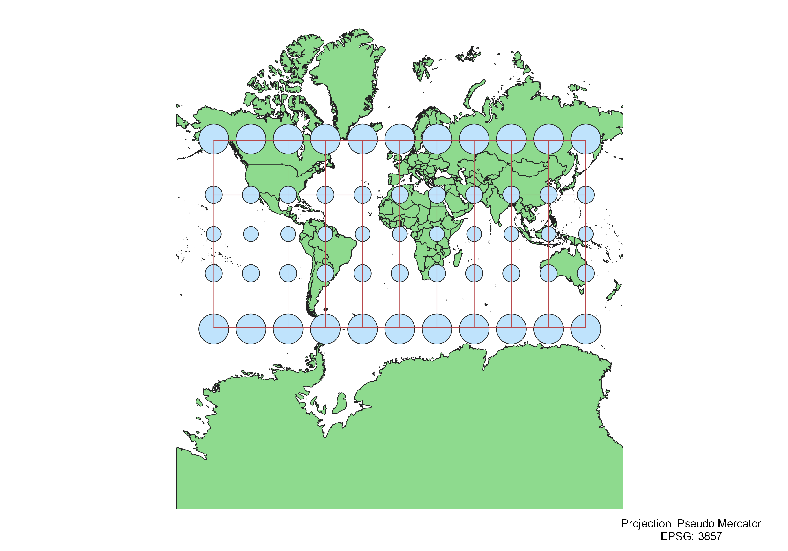
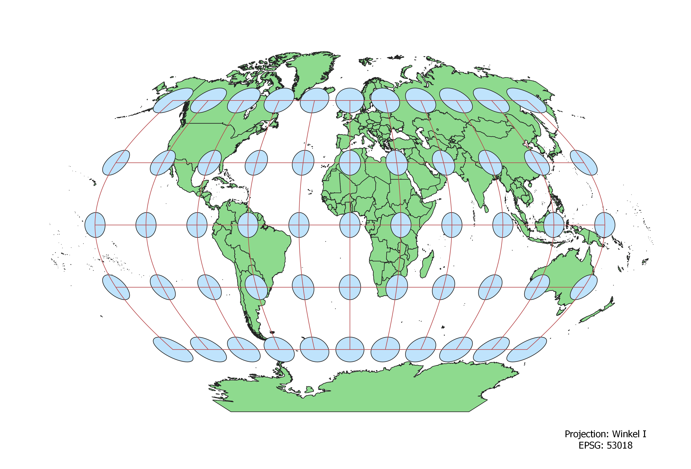
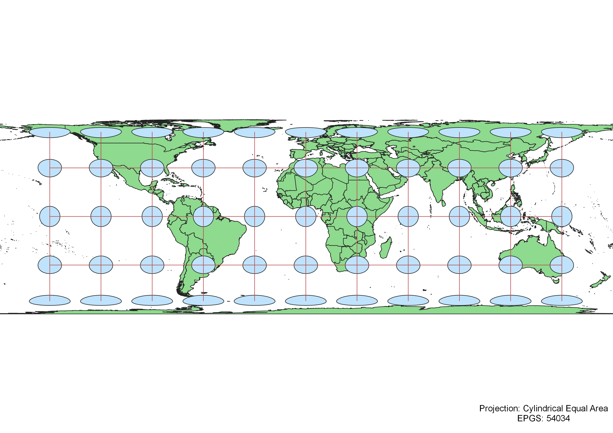
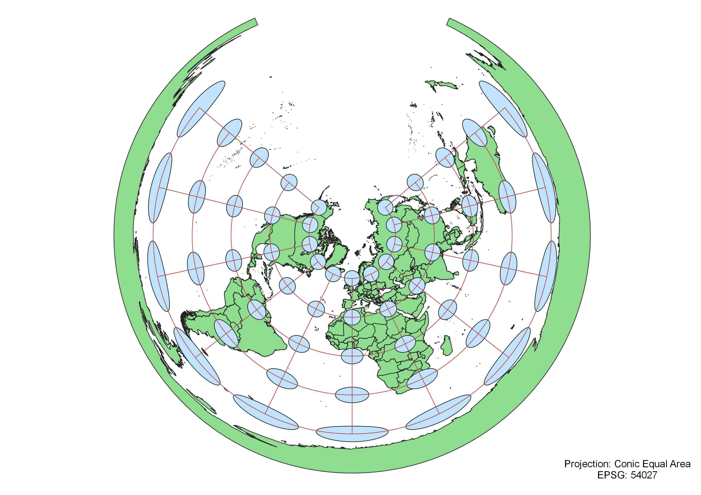
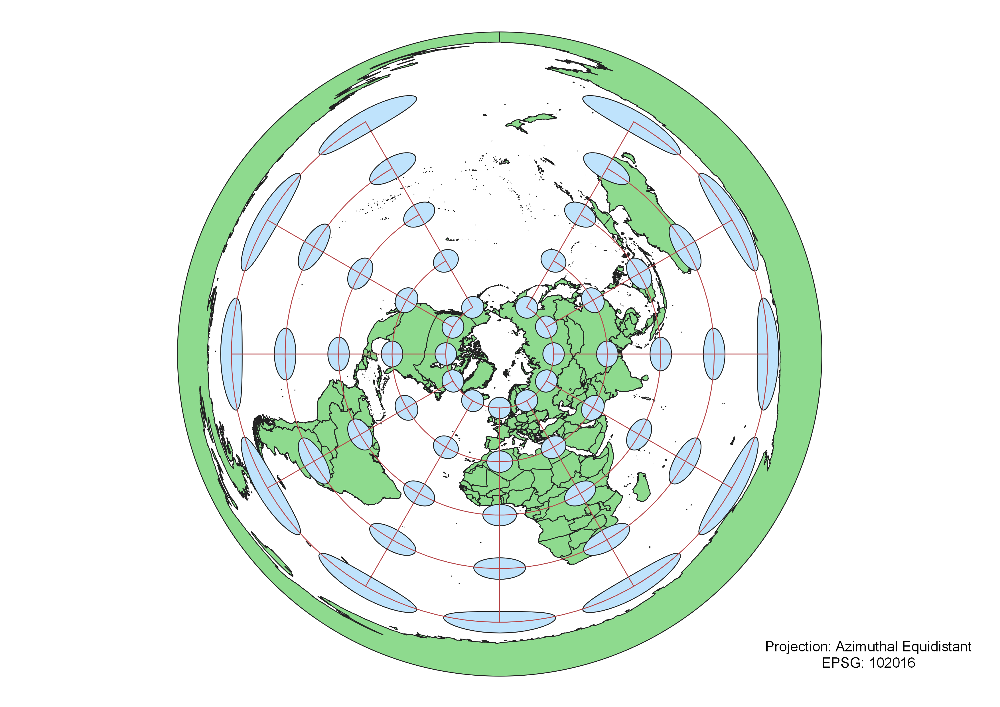
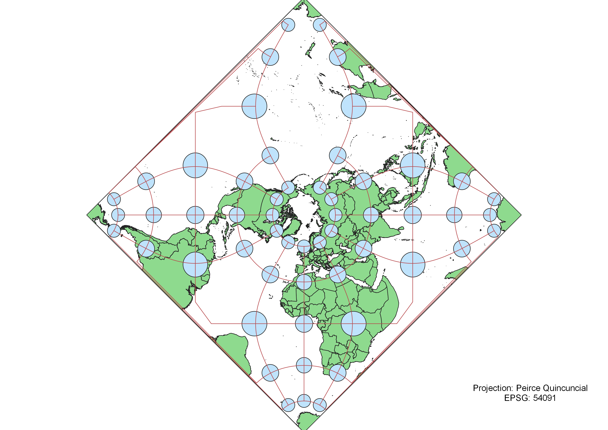
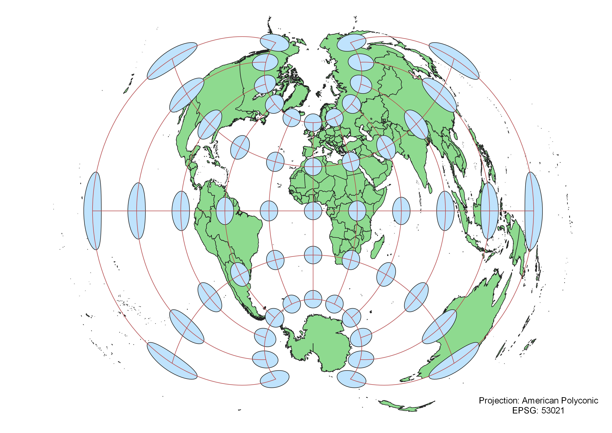

In this project I used QGIS to display a world map in nine different projections.
To display the projections so that distortions were clearly visible, I installed the Indicatrix mapper plugin through QGIS, and clicked the globe icon that appeared once the plugin was activated to display lines of latitutude and longitude between rows of circles across the map.
Once the plugin was installed, I changed the map projection by clicking the bottom of the QGIS screen where the EPSG value was located, and searched for the projection I wished to display. I repeated this for each of the nine projections I used in this assignment: WGS84, Aitoff, Pseudo-Mercator, Winkel, Cylindrical Equal-Area, Equidistant Cylindrical, Azimuthal Equidistant, Peirce Quincuncial, and American Polyconic.
WGS84 Projection
The WGS84 projection is accurately scaled close to the equator, but the map becomes increasingly distorted close to the poles, with countries becoming flattened and wide. Mid-latitude countries appear accurately scaled.

Aitoff Projection
Some observations

Pseudo-Mercator Projection
Some observations

Winkel Projection
Some observations

Cylindrical Equal-Area Projection
Some observations

Equidistant Conic Projection
Some observations

Azimuthal Equidistant Projection
Some observations

Peirce Quincuncial Projection
Some observations

American Polyconic Projection
Some observations

Data used for this project
Download Natrual Earth 1:10m Cultural Vector